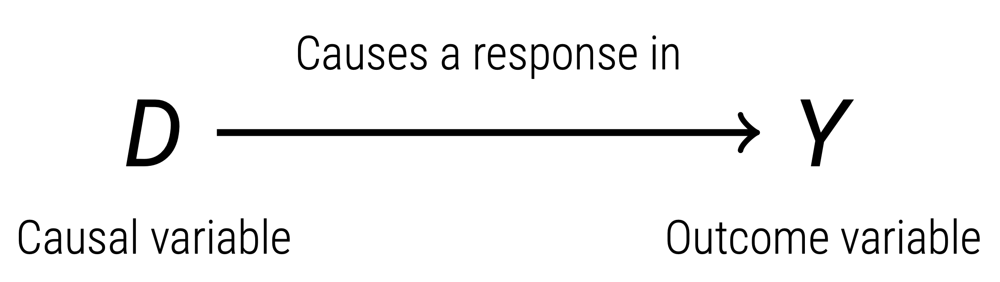

1 What is Causation?
In this chapter, we discuss the the key aspects of causal inference:
- Define what a treatment and outcome are.
- Discuss the potential outcomes framework as a way to think about causality.
- Discuss the issue of counterfactuals as the main problem in causal inference.
- Discuss. the idea of statistical inference and uncertainty.
Some helpfulnotes are provided in the margins. If you want a more formal and detailed description of the topics in this chapter, consult appendix B.
Treatment and Outcomes
In causal inference, we are concerned with how a treatment (notated \(D\)) causes some change in the outcome variable (notated \(Y\)).

| Our Causal Question: \(D \rightarrow Y\) | Treatment \(D\) | Outcome \(Y\) |
|---|---|---|
| How does taking the vaccine cause change in mortality rates? | Getting the vaccine (yes or no) | Mortality rate |
| How does going to college change your expected lifetime earnings? | Went to college (yes or no) | Expected lifetime earnings |
| How does the presence of tax exemptions on electric vehicles change how many electric vehicles are sold? | Tax exemptions on electric vehicles (yes or no) | Amount of electric vehicles sold |
We generally assume that the treatment variable is binary.
Note: a binary variable is a variable that can only take two values (often labelled 0 or 1). For example, flipping a coin is either heads or tails.
\[ D = \begin{cases} 0 \quad \text{You did not receive the treatment} \\ 1 \quad \text{You did receive the treatment} \end{cases} \]
Potential Outcomes Framework
Imagine we have two hypothetical parallel worlds that are copies of each other. Both of these worlds are identical except for one aspect: the treatment. In one world, you get the treatment, and in the other parallel world, you do not get the treatment.
The outcome values of these two parallel worlds are called potential outcomes:
| Parallel World | Potential Outcome |
|---|---|
| Does not Receive Treatment \(D = 0\) | \(\C\) |
| Receives Treatment \(D = 1\) | \(\T\) |
Note: Appendix B provides more details on potential outcomes.
The two hypothetical parallel worlds are identical to each other, with the only difference being in one world, you get the treatment. Thus, any difference in outcomes between the two worlds must be the causal effect of the treatment (notated \(\tau\)):
\[ \tau = \T - \C \]
Note: \(\tau\) (tau) is a greek letter that is used to represent causal effects. Also technically, for this equation to be true, we need an additional assumption called SUTVA. Appendix B gives more details.
We call this causal effect the individual treatment effect.
The Problem of Counterfactuals
However, in reality, we do not have two parallel worlds. You either get the treatment, or don’t get the treatment. Thus, by definition, one of the potential outcomes is not observed in our real world - the one not observed is called the counterfactual.
| In the Real World | Observed Outcome \(Y\) | Counterfactual |
|---|---|---|
| Scenario 1: I receive treatment | \(Y = \T\) | \(\Cred\) |
| Scenario 2: I did not receive treatment | \(Y = \C\) | \(\Tred\) |
The fundamental problem of causal inference is that in order to calculate our individual treatment effect \(\tau\), we need both potential outcomes. However, we can never observe both.
We need to estimate the counterfactuals with an estimator. This is difficult at the individual level, so instead, we focus on average treatment effects for groups:
Note: An estimand is some true value, such as the true individual treatment effect defined by our potential outcomes. An estimator is a procedure to produce an estimate of the true value of the estimand.
| Type | Notation | Definition |
|---|---|---|
| Average Treatment Effect (ATE) | \(\tau_{ATE}\) | The average of individual treatment effects \(\tau\), for all individuals in our study, including people who did and didn’t get the treatment. |
| Average Treatment Effect on the Treated (ATT) | \(\tau_{ATT}\) | The average of individual treatment effects \(\tau\), but only for individuals who receive the treatment in our study. We ignore those who never receive treatment in our study. |
| Local Average Treatment Effect (LATE) | \(\tau_{LATE}\) | The average of individual treatment effects \(\tau\), but only for a specific (local) group of individuals in a study. This group is usually defined by some characteristic the individuals hold together. |
Uncertainty and Inference
The estimation process for counterfactuals has a level of uncertainty. We cannot be sure that our estimates are completely accurate. We quantify that uncertainty in our causal effect estimates with a standard error. This value tells us how precise our estimates are:
- Smaller standard errors means we are more confident about our estimates.
- Larger standard errors means we are less certain about our estimates.
Note: the mathematics of calculating standard errors is complex, so we will just trust our computer can do this accurately.
With our standard errors, we can calculate how likely that there is zero (no) causal effect (called a p-value). This procedure is called a hypothesis test. Our p-value gives us the following interpretations:
| P-Value | Implication | Conclusion |
|---|---|---|
| Less than 0.05 (5%) | There is less than a 5% chance that there is a zero causal effect. This means a 95%+ chance that there is a causal effect. | We can conclude that the causal effect is statistically significant and conclude treatment \(D\) causes outcome \(Y\). |
| Greater than 0.05 (5%) | There is greater than a 5% chance that there is zero causal effect. This means a 95% or less chance that there is a causal effect. | We cannot conclude that there is a causal effect between \(D\) and \(Y\). The effect is not statistically significant. |
In most software and reports, if there is a p-value less than 5%, the authors will put stars (**) next to the estimate. If you see any stars, there is statistically significant causal effect.
Further Resources
If you want a more formal and detailed description of the topics in this chapter, consult appendix B.